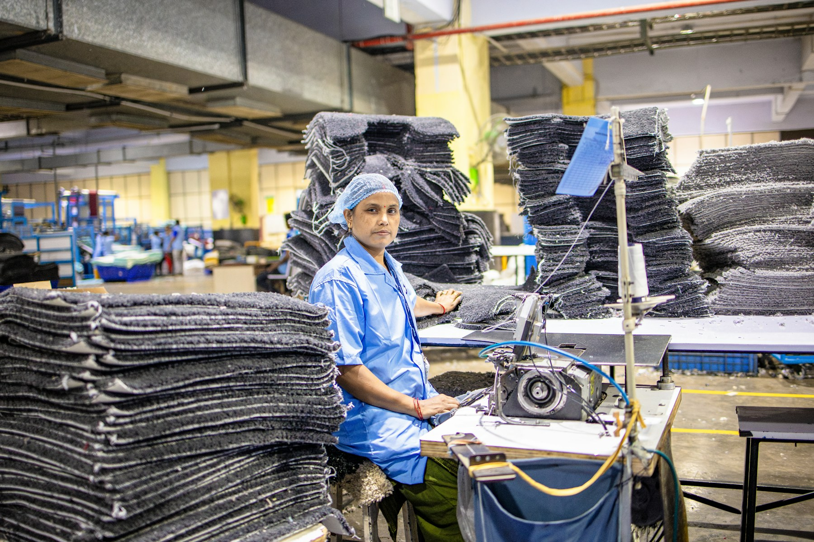
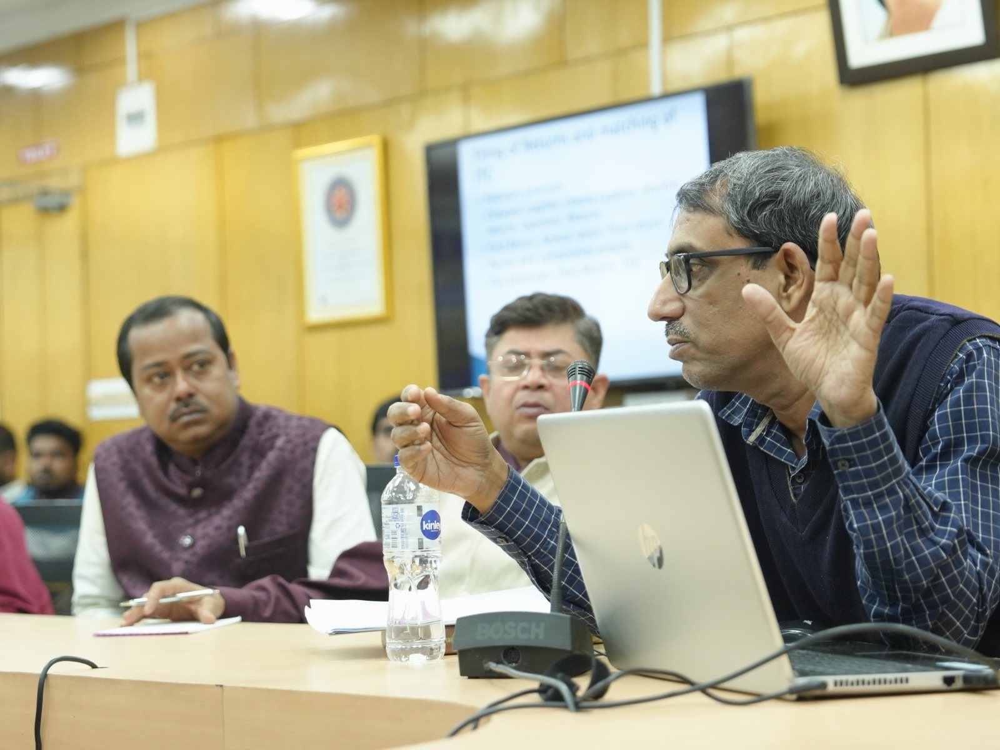
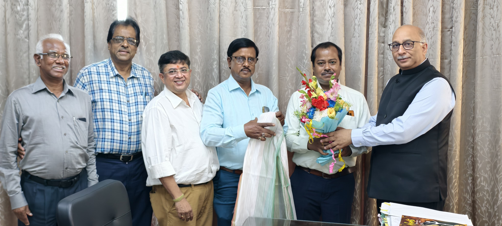

MSME Advocacy
Representing practical concerns before relevant institutions and encouraging transparent, business-friendly processes.

CUTA brings experienced business owners, manufacturers, and entrepreneurs together to strengthen practical awareness, market opportunity, and industry representation.
We connect industry experience with information, institutions, and opportunity so enterprises can move forward with greater clarity and confidence.
Representing practical concerns before relevant institutions and encouraging transparent, business-friendly processes.
Knowledge sessions that help members understand taxation, documentation, regulatory updates, and procedural expectations.
Structured opportunities for members to exchange experience, build relationships, and identify new possibilities.
Constructive dialogue around tendering, work distribution, documentation, and fair participation in procurement systems.
Encouraging better systems, stronger readiness, and effective participation in emerging market opportunities.
Timely access to notices, relevant programmes, official resources, and developments that affect business.

The Council of United Trade Alliance serves as a bridge between experienced business owners and West Bengal's evolving industrial landscape. Our members bring decades of practical knowledge from manufacturing, supply chains, distribution, services, and commercial operations.
We turn ground-level concerns into structured discussions, awareness programmes, networking opportunities, and constructive engagement with key stakeholders.
Supporting photograph by Syed Qaarif Andrabi on Unsplash.
Our programmes bring useful information, relevant officials, and MSME experience into the same room.

A focused session on GST updates, filing guidance, documentation, input tax credit, and practical compliance concerns.
Read event detailsFrom the CUTA programme archive, January 18, 2024.

A high-level discussion on WBSIDCL work distribution and practical improvements to e-tender participation for MSMEs.
Read event detailsFrom the CUTA delegation archive, March 8, 2025.
Membership keeps you informed, connected, and represented within a wider manufacturing and business community.
Receive relevant notices, programme updates, awareness resources, and government-linked information.
Meet experienced entrepreneurs, manufacturers, professionals, and business leaders across sectors.
Bring practical industry issues into a structured collective forum designed for constructive representation.
Become part of a collaborative MSME network built around practical progress, responsible business, and collective strength.